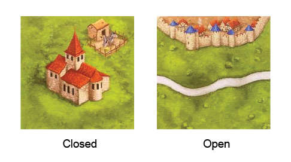
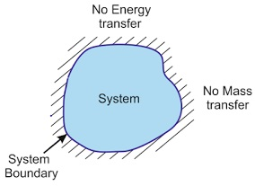
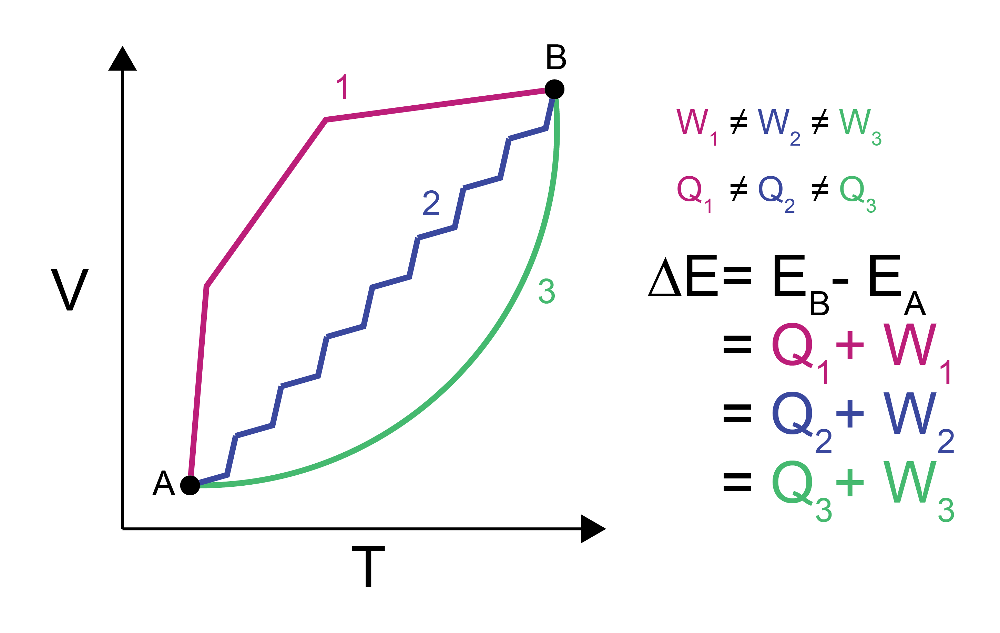

Review of thermodynamics#
We will begin this course by focusing largely on statistical mechanics. It is assumed that most students have taken thermodynamics at the undergraduate level, and thus will be familiar with some basic concepts that will be re-visited later in the course. We will first briefly review thermodynamic concepts that will prove necessary for studying statistical mechanics.
Goals for today’s lecture#
How do we describe thermodynamic systems?
What is the difference between a state variable and a path-dependent variable? What are some examples?
What are natural variables?
What is equilibrium?
Given a set of natural variables, how do I define a new thermodynamic potential?
Description of the system#
Let’s start with definitions:
- system#
the part of the universe that we seek to study. A system is defined by its contents and boundaries
- boundaries#
the interface between our system and the surrounding world
- surroundings#
- environment#
the part of the universe in contact with our system
Systems and their boundaries are described by the following terms
{kind=link}
- Closed#
mass does not flow into or out of a closed system (the boundaries are impermeable).
- Open#
mass can flow into or out of an open system (the boundaries are permeable).
{kind=link}
{kind=link}
- Adiabatic/Insulated#
adiabatic/insulated boundaries prevent the transfer of heat/energy.
- Diathermal#
diathermal boundaries allow the transfer of heat/energy.

{kind=link}
- Isolated#
an isolated system is closed, rigid, and adiabatic.
Thermodynamic variables#
We will define two different types of thermodynamic variables:
- Extensive#
variables depend on the size or amount of material in the system. If a system is formed from two subsystems, the extensive properties of the combined system are equal to the sum of the extensive properties of the subsystems. For example, the volume and internal energy are extensive variables.
- Intensive#
variables do not increase as the size or amount of the system increases. For example, the temperature and pressure are always intensive variables.
The ratio of extensive variables (typically an extensive variable divided by the amount of material) also defines an intensive variable - for example, the molar volume is an intensive variable. Variables defined by dividing an extensive variable by the number of particles are sometimes called specific properties, although we will not frequently use that nomenclature. Conversely, multiplying always intensive variables (temperature and pressure) by the amount of material does not yield a meaningful extensive parameter. We will further discuss the definition of always intensive variables in the material below.
Combining the above, we can consider a gas with \(N\) particles in a volume \(V\), temperature \(T\), and pressure \(P\). If this system were duplicated and combined, the result would be a gas with \(2N\) particles in a volume \(2V\) still at a temperature \(T\) and pressure \(P\) - the extensive variables have doubled, but the intensive variables are unchanged. If we define the density as a specific property \(\rho=N/V\), it is also unchanged upon doubling the system size.
Work and heat#
Work#

The mechanical work, \(W\), is the product of an intensive generalized force, \(f\), and an extensive generalized displacement, \(\Delta x\):
We will define the work as positive if the work is done on the system by the environment. In differential form, this can be written:
Here, \(A\) and \(B\) indicate the initial and final thermodynamic states connected by some process. Thermodynamic states are defined by the values of thermodynamic variables - each state would have a corresponding volume, temperature, pressure, number of particles, etc. The process is defined by a specific path through intermediate states (or non-equilibrium states) as we will discuss again shortly.

The most common example of work we will see is pressure-volume work, or the work done due to an expansion or compression of a system.
For expansion-contraction work, the generalized force, \(f\) is equal to the negative pressure, \(-P\) (by convention) and the generalized displacement is equal to the change in the volume, \(V\):
An increase in the system’s volume is associated with work being done in the surroundings. There are many types of work, as summarized below. The differential parameter here is always extensive, while the prefactor is always intensive. These pairs of intensive-extensive variables are referred to as conjugate variables.
Some of you may not have extensively discussed the chemical potential. Still, it is a quantity conceptually identical to the fugacity (and used in its definition) as we will discuss much later in the course.
Type of Work |
Equation |
Intensive Property |
Extensive Property |
|---|---|---|---|
Chemical |
\(\mu dN\) |
chemical potential \(\mu\) |
number of molecules in a system \(N\) |
Surface Deformation |
\(\sigma dA\) |
stress \(\sigma\) |
area \(A\) |
Elongation |
\(\tau dL\) |
tension \(\tau\) |
length \(L\) |
Magnetic |
\(H dM\) |
magnetic field \(H\) |
magnetization \(M\) |
Heat#
The heat absorbed by (added to) the system from its surroundings during as it goes from state \(A\) to state \(B\) is
Both work and heat (equations (5) and (7)) rely on integrals that depend on the exact path taken between state \(A\) and state \(B\).
However, the difference in the internal energy, \(E\), between state \(A\) and \(B\) does not depend on the path. \(E\) is thus called a state function because it is a property of each state and not the path between them. We can write the change in \(E\) between states \(A\) and \(B\), \(\Delta E\), for a system undergoing a change in volume as:
This equation is the first law of thermodynamics and defines the conservation of energy. Note that since each path passes through intermediate states which may vary in pressure, \(P\) is within the integral above as its value will depend on the specific path taken. The same change in energy will be obtained for any arbitrary path, though, so we are free to calculate the change in energy along the path that is most convenient for a given calculation (e.g., along a path for which the pressure is constant).

Entropy#
The second law of thermodynamics defines another state function called the entropy, \(S\). Entropy is conceptually equivalent to the amount of uncertainty pertaining to any given macrostate (more on this later). The combined entropy of a system and its surroundings (i.e., the universe) always increases in an irreversible process and remains constant in a reversible process; it never decreases. The entropy of the system can decrease as long as there is a corresponding increase in the entropy of the surroundings such that the total entropy of the universe is constant or increases. The change in entropy between states \(A\) and \(B\) is \(\Delta S = \int_A^B dS = \int_A^B \frac{dQ_{\mathrm{rev}}}{T}\), therefore:
The subscript on \(dQ\) indicates that the change in entropy is defined along a reversible path from \(A\) to \(B\). For irreversible processes, the second law of thermodynamics states
What is the lower limit for entropy in an isolated system?
[Click for answer]
In an isolated system, dQ = 0 for all processes since no heat can exchange with the universe. Therefore, S is always greater than or equal to 0.The fundamental relation of thermodynamics#
For a system undergoing a reversible process, we can write a combined first and second law of thermodynamics (assuming a one-component system) by combining equations (6) and (8):
This expression is also called the fundamental relation of thermodynamics in the energy representation. We can write an equivalent expression in terms of the entropy:
This is called the fundamental relation in the entropy representation. Because energy is a state variable can also write an exact differential of \(dE\) to obtain expressions for an intensive variables:
Comparing this expression with the fundamental relation in the energy representation yields:
and
The subscripts indicate that the partial derivative is taken with the subscripted variable held constant; in other words, Equation (10) states that the temperature is defined as the partial derivative of the internal energy with respect to entropy at constant volume. Using these relations, we find that for each pair of conjugate variables that appears in the fundamental relation, the variable that is always intensive can be expressed as a partial derivative of either the energy or the entropy with respect to its conjugate extensive variable and with all other extensive variables held constant.
Conjugate Variables#
Each pair of variables that appear in our fundamental relations is called a pair of conjugate variables, consisting of an intensive prefactor and extensive differential. The four most common sets of conjugate pairs that we will discuss are:
Temperature (\(T\), intensive) and entropy (\(S\), extensive)
Temperature (\(T\), intensive) and energy (\(E\), extensive; from entropy representation of fundamental relation, where \(E\) and \(S\) swap roles)
Pressure (\(P\), intensive) and volume (\(V\), extensive)
Chemical potential (\(\mu\), intensive) and number of particles (\(N\), extensive)
Natural variables#
We can extend the fundamental relation to include additional work terms (i.e., additional conjugate pairs) by writing:
We will typically omit work terms other than pressure-volume and chemical work unless required to include them by a specific problem.
In our previous sections, we have shown how we can write our intensive variables (\(T, -P, \mu\)) as a partial derivative of the internal energy with respect to its conjugate extensive variable. Therefore, we could write our fundamental relation without these variables, instead only in terms of \(N\), \(V\), and \(S\). Because of this, \(N\), \(V\), and \(S\) are called the natural variables of the internal energy.
What is the differential of internal energy (dE) in a system where we hold N, V, and S constant?
[Click for answer]
For any process in which N, V, and S are held constant, dE = 0 and therefore E(N, V, S) is at an extremum.If we were to control the natural variables via suitable experimental manipulation, or by imposing the appropriate boundaries on a system, we could then predict that the corresponding thermodynamic potential would go to an extreme. We will take advantage of this behavior later.
Equilibrium#
A system is said to be at equilibrium when there is no driving force to change intensive variables in the system and the system’s properties do not change as a function of time. A system that is at equilibrium is described as being in an equilibrium state which is fully specified by the values of the thermodynamic parameters described above. The three most relevant conditions of equilibrium that we will discuss are:
- Thermal equilibrium#
if a system has diathermal walls, at equilibrium the temperature of the system will be equivalent to the temperature of the surroundings, or \(T^\textrm{sys} = T^\textrm{surr}\).
- Mechanical equilibrium#
if a system has movable walls, at equilibrium the pressure of the system will be equivalent to the pressure of the surroundings, or \(P^\textrm{sys} = P^\textrm{surr}\).
- Chemical equilibrium#
if a system has open walls, at equilibrium the chemical potential of each component of the system will be equivalent to the chemical potential of each component in the surroundings, or \(\mu_i^\textrm{sys} = \mu_i^\textrm{surr}\).
In each case, the system is free to exchange an extensive variable and the corresponding intensive variable is then constant. These pairs of variables are again the conjugate pairs mentioned above. A given system can satisfy multiple conditions of equilibrium simultaneously.
Additional thermodynamic potentials#
It is possible to write other expressions, called thermodynamic potentials, that are equivalent in information content to the fundamental relation but have a different set of natural variables. In the third unit of this class, we will show that these relations are equivalent; here, we will only focus on the method for defining them. The procedure is as follows:
Identify the desired natural variables of the new potential (e.g., \(N,V,T\))
For any natural variable that is different from the natural variables of the internal energy (i.e., \(N,V,S\)), subtract the product of the desired natural variable and its conjugate from the internal energy, \(E\). The new expression defines the equivalent thermodynamic potential.
What is the expression for enthalpy H, whose natural variables are N, P, and S?
[Click for answer]
This differs from the internal energy by the variable P, so we subtract the product of P and its conjugate (V) to generate the expression for the enthalpy. The slight caveat here is that in our sign convention it is -P, not P, that is used in the conjugate pair, so we subtract -P instead:
therefore
Write the equation for enthalpy only in terms of its natural variables.
[Click for answer]
Here we replace each non-natural variable with the derivative of enthalpy, holding the appropriate natural variables constant.What is the expression for Helmholtz free energy F, whose natural variables are N, V, and T?
[Click for answer]
This differs from the internal energy by the variable T, so we subtract the product of T and its conjugate (S) to generate the expression for the Helmholtz free energy.
therefore
What is the expression for Gibbs free energy G, whose natural variables are N, P, and T?
[Click for answer]
This differs from the internal energy by the variable T and P, so we subtract the products of T and P (and their conjugates) to generate the expression for the Helmholtz free energy.
therefore
We will return to these expressions repeatedly throughout our discussion of statistical mechanics, and will discuss thermodynamic relations in more detail later in the course. If the importance of natural variables is not clear, you can first see that different thermodynamic potentials will reach extremum values when different conditions of equilibrium occur. For example, a system with impermeable, rigid, diathermal walls that reaches thermal equilibrium with the surroundings will have constant \(N\), \(V\), and \(T\), and thus the Helmholtz free energy (with corresponding natural variables) will reach an extremum value. Analysis of the Helmholtz free energy can then be used to understand how changes to this system properties affect its equilibrium behavior. We will further use the natural variables to connect to statistical mechanics as will be discussed in future lectures. For now, we conclude our review of thermodynamics.